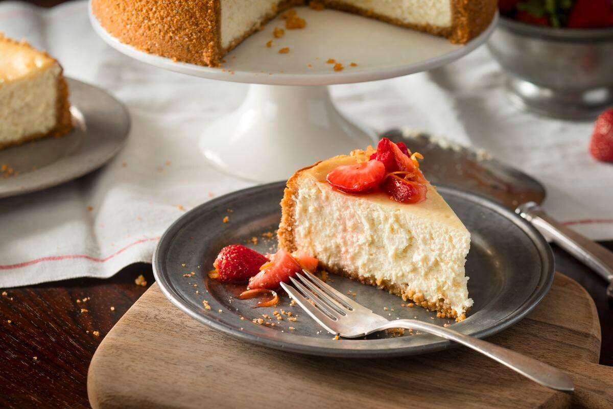

After several years of practicing, i finaly mastered my recipe.
Today I’m so excited to show you how to make the best Cheesecake Recipe of your life.
Simple & tasty!! The texture is smooth, rich, and creamy, served over a crisp homemade
graham cracker crust.
I’ve included tons of detailed tips and important info in today’s post so you can make
the perfect creamy cheesecake every time. For a how-to, be sure to check out my
step-by-step recipe!

The Perfect Cheesecake Recipe
This cheesecake recipe has been a long time coming.
For a recipe with so few ingredients (cream cheese, eggs, sugar, sour cream, vanilla & salt),
it took a lot longer than you might think to develop the perfect version. I’ve shared a few
cheesecake variations in the past, including my No-Bake Cheesecake, but getting a perfected
classic version took lots of testing. Finally, here we are.
Oh, and we are skipping the water bath! I’ve always found them to be largely unnecessary with
cheesecakes. Cook yours on a low temperature and follow my tips below and you’ll have a
perfectly creamy and crack-less cheesecake without all the hassle of a water bath.
Igredients:
Gracham Cracker Crust
170g cups graham cracker crumbs
2 Tablespoons sugar
1 Tablespoon brown sugar (can substitute white)
7 Tablespoons butter melted
Cheesecake
32 oz cream cheese² softened to room temperature (910g)
1 cup sugar 200g
⅔ cups sour cream 160g
1 ½ teaspoons vanilla extract
⅛ teaspoon salt
4 large eggs room temperature, lightly beaten
Instructions:
Preheat oven to 160C.
Prepare Graham Cracker crust first by combining graham cracker
crumbs, sugar, and brown sugar, and stirring well. Add melted butter
and use a fork to combine ingredients well.
Pour crumbs into a 9” Springform pan and press firmly into the bottom
and up the sides of your pan. Set aside.
Cheesecake
In the bowl of a stand mixer or in a large bowl (using a hand mixer) add
cream cheese and stir until smooth and creamy (don’t over-beat or you’ll
incorporate too much air).
Add sugar and stir again until creamy.
Add sour cream, vanilla extract, and salt, and stir until well-combined.
If using a stand mixer, make sure you pause periodically to scrape the sides
and bottom of the bowl with a spatula so that all ingredients are evenly incorporated.
With mixer on low speed, gradually add lightly beaten eggs, one at a time,
stirring just until each egg is just incorporated. Once all eggs have been added,
use a spatula to scrape the sides and bottom of the bowl again and make sure all
ingredients are well combined.
Pour cheesecake batter into prepared springform pan. To insure against leaks, place
pan on a cookie sheet that’s been lined with foil.
Transfer to the center rack of your oven and bake on 160C for about 75 minutes.
Edges will likely have slightly puffed and may have just begun to turn a light golden
brown and the center should spring back to the touch but will still be Jello-jiggly.
Don't over-bake or the texture will suffer, which means we all suffer.
Remove from oven and allow to cool on top of the oven³ for 10 minutes. Once 10 minutes
has passed, use a knife to gently loosen the crust from the inside of the springform pan
(this will help prevent cracks as your cheesecake cools and shrinks).
Allow cheesecake to cool another 1-2 hours or until near room temperature before transferring
to refrigerator and allowing to cool overnight or at least 6 hours. Enjoy!
Please Note: This recipe is stolen. If you want to see the original recipe, follow the link below!